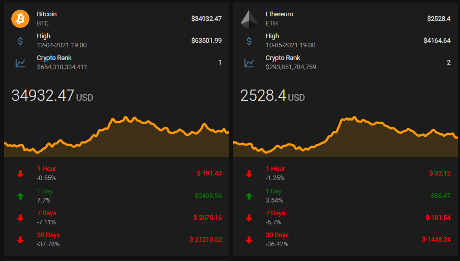
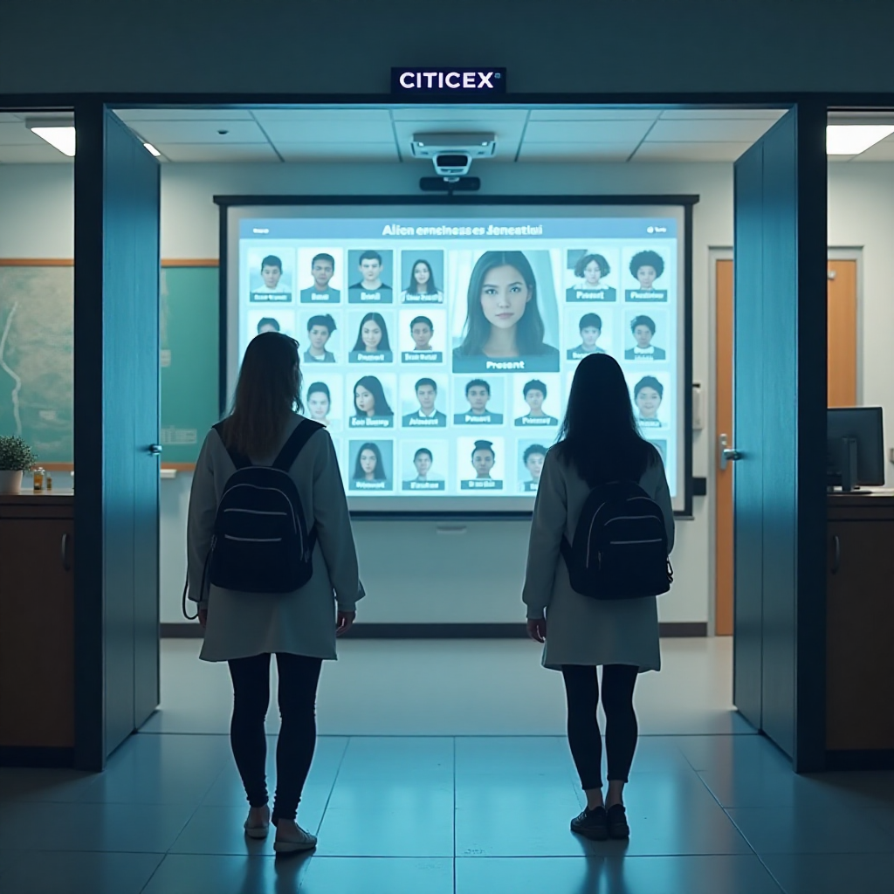

I am Saurabh Rajendra,
a Full Stack Data Developer
& a Data Analyst.

About
Analytical and detail-oriented Full Stack Data Developer and results-driven Data Analyst with a strong command of Python, SQL, Django, Flask, and Docker, along with hands-on experience in Power BI and Tableau. Skilled in designing scalable data pipelines, developing full-stack web applications, and automating ETL processes. Proven ability to deliver end-to-end solutions, including REST API development, containerization, and interactive data visualizations. Adept at translating complex data into actionable insights to support strategic decision-making.
Download ResumeTechnical Skillset
- Languages & Tools: Python (Django, Flask, Pandas, NumPy, Matplotlib, Seaborn), SQL, Power BI, Tableau, Excel, Dask, OAuth, Snowflake
- Methodologies: Agile, Scrum
Databases: MySQL, PostgreSQL, MongoDB
Cloud & DevOps: AWS, Azure, Docker, Apache Airflow, Git
Other Tools: Jupyter Notebook, MS Office, Google Sheets
Soft Skills: Analytical Thinking, Communication, Problem Solving, Business Acumen
Experience
Data Analyst
Cognifyz Technologies - Remote Internship
June/2025 - July/2025
Assisted in cleaning and analyzing raw data using Python (Pandas, NumPy) and Excel to support ongoing business reports and insights. Created basic dashboards and visualizations in Power BI/Tableau to help stakeholders monitor key performance indicators. Wrote SQL queries to extract and summarize data from relational databases, aiding in weekly team reporting and decision-making
Data Analyst
Taare Zameen Foundation - Remote Internship
May/2025 - June/2025
Independently collected, cleaned, and analyzed large datasets using Python and SQL, ensuring data accuracy and consistency in a remote work setting. Designed and delivered self-driven insights through custom visualizations in Tableau/Power BI to highlight key trends and business metrics. Conducted exploratory and statistical data analysis to support strategic decision-making, communicating findings clearly through reports and presentations.
Data Science Intern
Prodigy Infotech - Remote Internship
Oct/2024 - Nov/2024 J
Developed end-to-end data pipelines for cleaning, preprocessing, and transformation using Pandas and Scikit-learn on datasets like Titanic and Bank Marketing.Implemented machine learning and NLP workflows, including Decision Tree classification and Twitter sentiment analysis with trend visualization.Demonstrated strong grasp of ETL processes, modular Python coding, and data visualization through Matplotlib and Seaborn.
Education
BSc. Computer Science
Thakur College of Science and Commerce, University of Mumbai
2022-2025
Courses: Software Engineering, Data Science, Artificial Intelligence, Web Services, Programming with Python, Java, C Language, Ethical Hacking, Linux Server Adminstration, Database Adminstration, Game Programming, Theory of Computation, Digital Signal Processing, Digital Image Processing.
12th Grade PCM - Computer Science
VIVA College of Arts Commerce and Science
2020-2021
I explored the world of Physics Chemistry, Maths and led the foundation of my Computer Science pathway.
Recent Works
Here are some of my favorite projects I have done lately. Feel free to check them out.
-
Machine LearningPaperPulse - Sentiment Analysis of Research Papers.
-
 Web DevelopmentChefMate - Recipe sharing platform.
Web DevelopmentChefMate - Recipe sharing platform. -
Machine LearningRefinr - ETL pipelines for Data processing and CSV cleaning.Web DevelopmentManageo - Task management API tool.ML / Web DevelopmentCryptowatchr - Cryptocurrency price tracker.Machine LearningDashlytics - Data visualization sales analysis dashboard.Machine LearningInvenTrackr - Automated Inventory management system.Machine LearningFinBuddy - Personal finance management system.Machine LearningFaceRoll - Face recognition attendance system.Machine LearningLibrary Management SystemProject link
SentiScholar - Sentiment Analysis of Research Papers.
PaperPulse is a sentiment analysis system designed to evaluate the emotional tone of academic research papers. It leverages the VADER NLP model to classify texts as positive, negative, or neutral. The tool aims to assist researchers and reviewers by offering quick sentiment insights into scholarly content..
Project linkChefMate - Recipe sharing platform
ChefMate is a social platform tailored for cooking enthusiasts to share, discover, and celebrate homemade recipes. Users can upload recipe images, like posts, follow others, and collaborate within a vibrant culinary community. With features like user search and real-time interaction, ChefMate brings the spirit of Instagram to the world of cooking..
Project linkRefinr - ETL Pipelines for Data Processing and CSV cleaning
Refinr is an efficient ETL pipeline built to clean, structure, and transform raw CSV data. It automates the extraction, validation, and loading of datasets for seamless downstream use. Ideal for data preprocessing in analytics, machine learning, and reporting workflows..
Project linkManageo – Task management API tool
Manageo is a lightweight RESTful API for managing tasks, projects, and team collaboration. It supports CRUD operations, deadlines, priorities, and task status tracking. Built with scalability in mind, it serves as a backend engine for any task-based application.
Project linkCryptowatchr – Cryptocurrency price tracker
Cryptowatchr is a real-time price tracker for popular cryptocurrencies like Bitcoin and Ethereum. It fetches and displays live market data using public APIs with clean visualization. Perfect for crypto enthusiasts, traders, or anyone needing quick currency insights.
Project linkDashlytics – Data visualization sales analysis dashboard
Dashlytics is a dynamic sales dashboard providing interactive data visualizations and performance metrics. It helps businesses analyze revenue, customer behavior, and trends using charts and filters. Designed for clarity and insights, it empowers smarter decision-making in sales strategy.
 Project link
Project linkInvenTrackr - Automated Inventory management system
Designed to track multiple inventories and containers for different agents, this Django app handles complex logistics and stock control. It calculates agent commissions based on inventory movement and sales performance. The system supports real-time updates and multi-agent coordination for efficient inventory tracking. It aims to reduce errors and improve transparency in inventory management. The project combines backend logic with interactive web interfaces.
 Project link
Project linkFinBuddy - Personal finance management system
Built with Django, this chatbot offers users personalized financial advice and expense analysis through conversational AI. It integrates machine learning models to predict stock market trends and analyze spending patterns. Users can interact with the chatbot to get budgeting tips and investment insights. The platform aims to simplify complex financial decision-making for everyday users. It combines natural language processing and data analytics for a user-friendly finance assistant.
 Project link
Project linkFaceRoll - Face-recognition-attendance-system
This project uses OpenCV to implement face recognition for automatic attendance tracking. The system captures images, identifies registered faces, and marks attendance without manual input. Originally a GUI application, it is being converted into a Django web app for easier access and management. It reduces attendance errors and streamlines tracking in educational or workplace settings. The system also supports real-time updates and attendance reports.
Project linkLibrary Management System
The Library Management System is a web-based application designed to streamline book inventory and transaction management for libraries. It supports role-based authentication, allowing both admins and users to securely access features according to their permissions. The system tracks book lending, returns, and current availability in real time, reducing manual errors and improving efficiency. It provides an intuitive dashboard for easy monitoring and management of library resources. Overall, this project automates library workflows and ensures smooth, organized operations for staff and patrons alike.
Get In Touch
I love to hear from you. Whether you want to collaborate on a project, or want to hire, ask a question or just want to say hello, feel free to reach out!